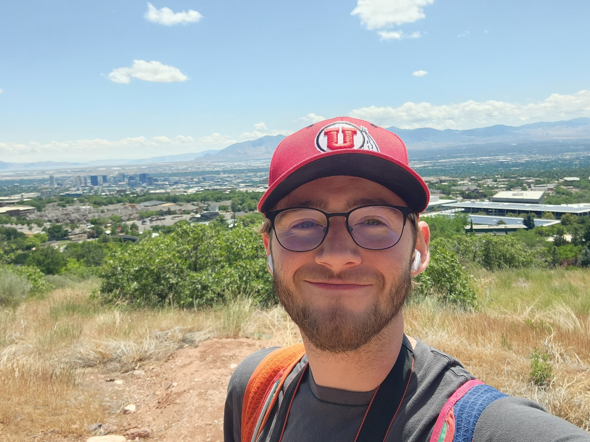

Matthew Lastner

I am a third-year mathematics Ph.D. student in the mathematical biology group at the University of Utah co-advised by Chris Miles and Ofer Rog. My research focuses on the biophysical behavior and properties of the chromosomal axis during meiosis through a blend of mathematical modeling and experimental biology.
This webpage is very much a work in progress; please excuse the lack of interesting visuals and graphics. The focus of this website is to provide links to my groups and activities for others.
Outside of working at a chalkboard or computer terminal, I like to take colorful photos. Check out some photos from the microscope to the trail and beyond.
News
- Aug. 2026 Appointed to the inaugural cohort for the PACeR T32 Training Grant (cell biology)
- Jul. 2026 Selected for the NITMB's Representing and Learning Morphology and Shape Dynamics from Biological Data workshop in October 2026
At the University of Utah, I am a part of several groups and seminars. If you are interested in learning more about any of these groups, please reach out to me.
Groups
Seminars
- Applied Mathematics Collective (AMC)
- Biophysics and Stochastics Seminar
- Mathematical Biology Seminar
- Physiology Seminar
Education
In 2024, I graduated from the University of Maryland, Baltimore County with a BS in Computer Science and a BS in Mathematics. I was recently selected by the Department of Mathematics and Statistics to be profiled in their "Where Are They Now?" alumni feature.
Teaching
I have been fortunate to teach in several capacities over the years at both the University of Utah and the University of Maryland, Baltimore County (UMBC).
- MATH 6610 - Analysis of Numerical Methods I, Teaching Assistant, University of Utah (Fall 2026)
- MATH 1050 - College Algebra, Instructor, University of Utah (Fall 2026)
- MATH 1050 - College Algebra, Instructor, University of Utah (Summer 2026) [through the Strong Start program]
- MATH 2250 - Differential Equations and Linear Algebra, Instructor, University of Utah (Spring 2026)
- MATH 1210 - Calculus I, Instructor, University of Utah (Fall 2025)
- MATH 2250 - Differential Equations and Linear Algebra, Teaching Assistant, University of Utah (Spring 2025)
- MATH 2250 - Differential Equations and Linear Algebra, Teaching Assistant, University of Utah (Fall 2024)
- MATH 301 - Introduction to Analysis I, Grader, UMBC (Spring 2024)
- PHYS 224 - Vibrations and Waves, Grader, UMBC (Spring 2024)
- PHYS 224 - Vibrations and Waves, Grader, UMBC (Spring 2023)
- MATH 251 - Multi-variable Calculus, Teaching Assistant, UMBC (Fall 2022)
- PHYS 224 - Vibrations and Waves, Grader, UMBC (Fall 2022)
- PHYS 121 - Introductory Physics I, Teaching Assistant, UMBC (Fall 2022)
- PHYS 121 - Introductory Physics I, Learning Assistant, UMBC (Summer 2022)
- MATH 251 - Multi-variable Calculus, Teaching Assistant, UMBC (Spring 2022)
- PHYS 121 - Introductory Physics I, Learning Assistant, UMBC (Spring 2022)
- PHYS 121 - Introductory Physics I, Learning Assistant, UMBC (Fall 2021)
- PHYS 121 - Introductory Physics I, Learning Assistant, UMBC (Spring 2021)